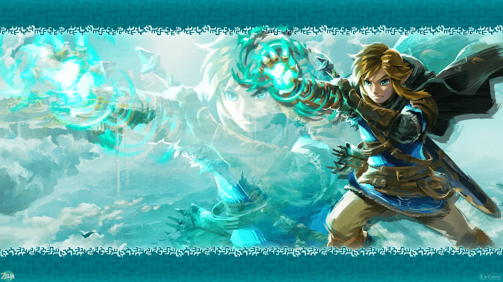

A franquia The Legend of Zelda segue sendo um dos maiores nomes dos videogames. Após o enorme sucesso de The Legend of Zelda: Tears of the Kingdom, lançado para Nintendo Switch, a expectativa dos jogadores por uma nova aventura de Link continua crescendo.
Enquanto a Nintendo mantém detalhes sobre o próximo grande capítulo da série em sigilo, os fãs continuam discutindo possibilidades para o futuro de Hyrule. Entre as principais expectativas estão um novo mapa para explorar, novas mecânicas de gameplay e uma história capaz de surpreender novamente os jogadores.